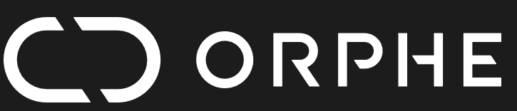

あか足首
1 / 30°
らくな姿勢で、じっとして
- じっとする
- 上げる
- 下げる
SUPER PINGPONG ORPHE CORE リハビリ卓球
足首や太ももを動かして、だるまさんと温泉卓球。
あそんだあとは、動きの「げんき度」がわかります。
上の 01 / 02 のスイッチで ORPHE CORE を接続。キーボードでも体験できます。
動かせる範囲をはかって、ラケットの動きを合わせます。痛みのない範囲で、ゆっくり動かしてください。
らくな姿勢で、じっとして
らくな姿勢で、じっとして

湯けむりピンポンお湯をわかしています…